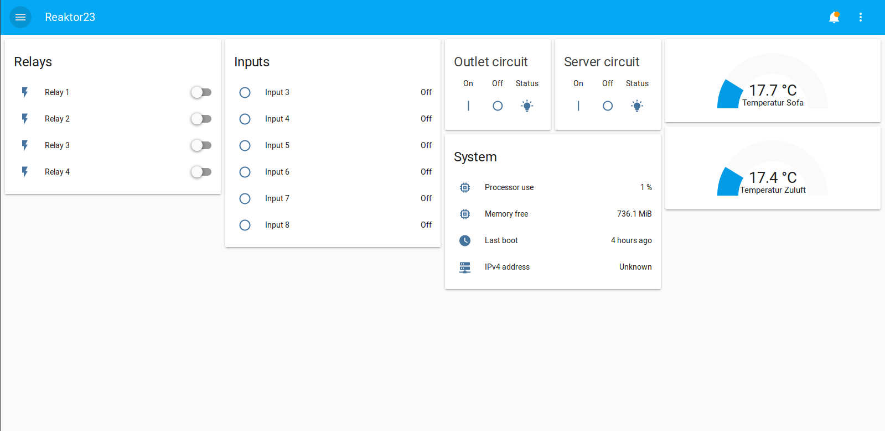

pwrcmdr2
Warum?
Unser aktueller bisheriger pwrCMDr bestand aus einem Arduino-Ethernet auf einer selbstgeätzten Platine.
Da wir immer wieder Probleme damit haben sollte etwas neues her, das vielleicht etwas mehr Spielraum gibt um Änderungen/Verbesserungen zu integrieren.
Hardware
Board
Wir haben uns für ein RaspberryPi 3 B+ entschieden, das ist ausreichend flott udn erfüllt alle unsere Wunschkriterien. Ausserdem ist es sehr viel einfacher zu bekommen als die etwas günstigeren Verterter von z.B. Aliexpress (BananaPi, etc.)
Formfaktor
Das Raspberry Pi kommt in ein Hutschienengehäuse von Pollin. Dieses hat ausreichend Platz für einen HAT auch wenn wir uns nicht an die genauen Specs halten.
Spannungsversorgung
Wir versorgen das Board mit 24VDC da wir das eh im Schaltschrank verwenden. Das RPi wird über die Stiftleisten mit 5VDC versorgt womit die Notwendigkeit eines USB Netzteil entfällt. Die 5V werden von einem AliExpress DC/DC Wandler generiert der auf dem Board verlötet wird.
Funktionen
Schützsteuerung
Wir haben wieder unsere zweikanalige Schützsteuerung verbaut, diese ist so ausgelegt das sie zwei Externe Schütze die unsere beiden Stromkreise schalten ein bzw. ausschalten können. Dabei war uns wichtig das das auch funktionieren muss wenn der PowerCommander einmal einen Ausfall haben sollte. Deshalb schalten die 4 Relais einfach eine Selbsthaltung der Schütze, parallel dazu gibt es noch extern verbaute Hardware Taster damit sich das ganze auch wie bereits erwähnt im Notfall schalten lässt.
Ein- und Ausgänge
Das Board verfügt über 4 Relais Ausgänge, dabei lässt sich über einen Lötjumper wählen ob der betreffende Kanal Schliesser oder Öffner sein soll. Desweiteren hat das Board 8 Digitaleingänge die 24V tollerant sind und mittels Optokopplern getrennt sind.
Sensorik
Es sind ein I2C, ein 1-Wire und ein RS485 Port vorhanden. Über diese wollen wir diverse Sensorik anbinden.
Software
Wir haben Hassio, eine speziell auf das RaspberryPi zugeschnittene Distribution von Home Assistant auf dem RaspberryPi installiert.
Das hat sehr viele nett Vortiele für uns:
- Ansteuerungen der GPIOs via Webinterface und/oder REST API (rpi_gpio)
- Auslesen der 1-Wire Temperatursensoren (sensor.onewire)
- Bereitstellen des Reaktorstatus via SpaceAPI (spaceapi)
Ausserdem die einfache Konfiguration via YAML files und das ermöglichen von Automations und vielen weiteren coolen Features!
So sieht das interface in seiner ersten Version aus, hier bietet sich noch viel Spielraum für Erweiterungen :-)
